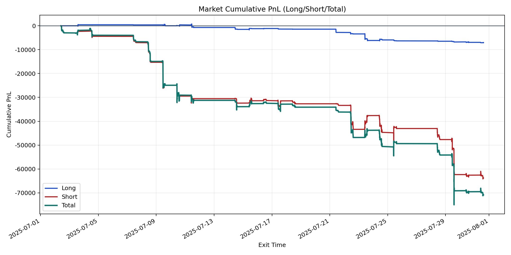
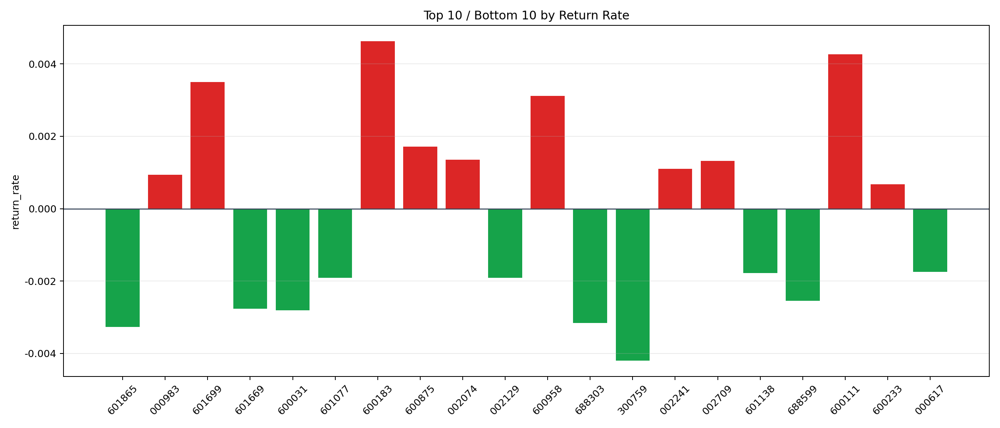

| repo_root | /home/haoranyou/data/output/alpha0.4_1w_5s_3ticks_index_filter/index_weights_300 |
|---|---|
| period_months | 1 |
| period_label | 2025-07-02_to_2025-07-31 |
| start_time | 2025-07-02 09:58:47 |
| end_time | 2025-07-31 14:52:27 |
| n_trades | 6388 |
| n_symbols | 37 |
| total_pnl | -70860.02914999999 |
| long_total_pnl | -7065.859399999955 |
| short_total_pnl | -63794.16975000004 |
| total_entry_notional | 59936599.0 |
| long_entry_notional | 6199037.0 |
| short_entry_notional | 53737562.0 |
| total_return_rate | -0.0011822497494394033 |
| long_return_rate | -0.001139831783549599 |
| short_return_rate | -0.0011871429848268895 |
| top_symbols_by_return | ["600183", "600111", "601699", "600958", "600875", "002074", "002709", "002241", "000983", "600233"] |
| bottom_symbols_by_return | ["300759", "601865", "688303", "600031", "601669", "688599", "002129", "601077", "601138", "000617"] |

